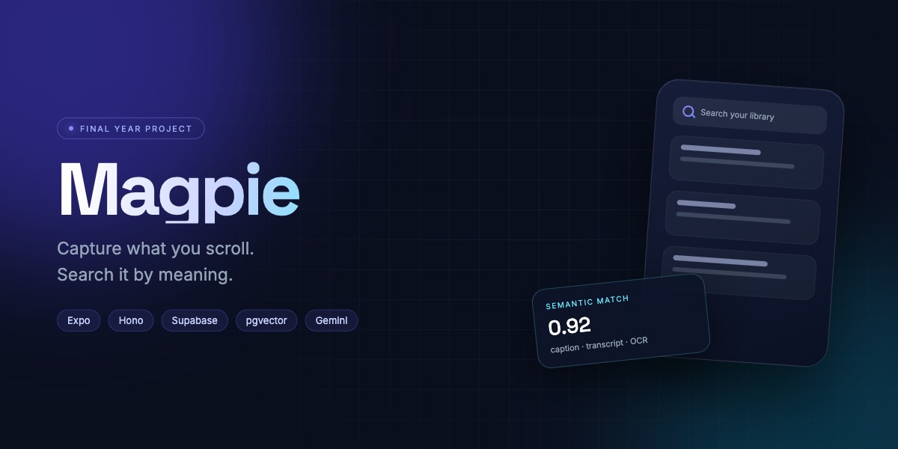
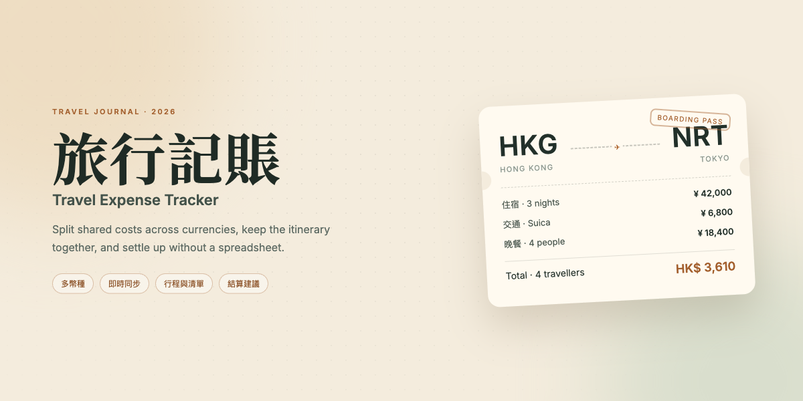
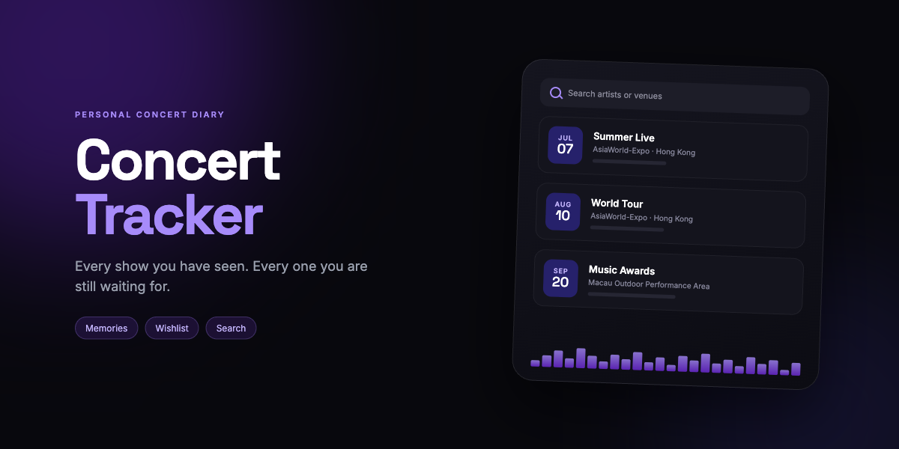
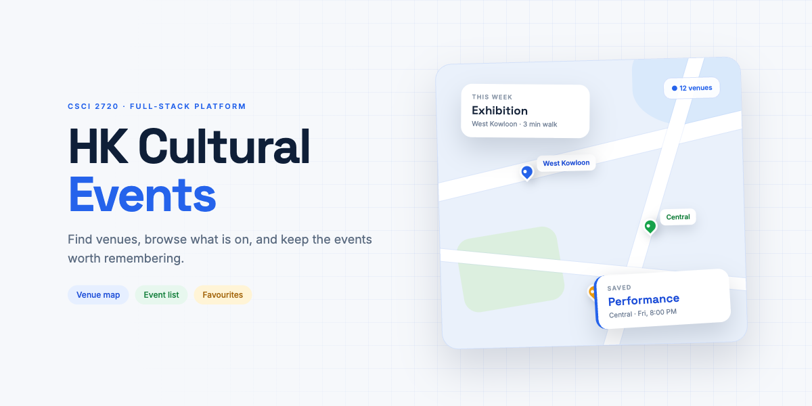
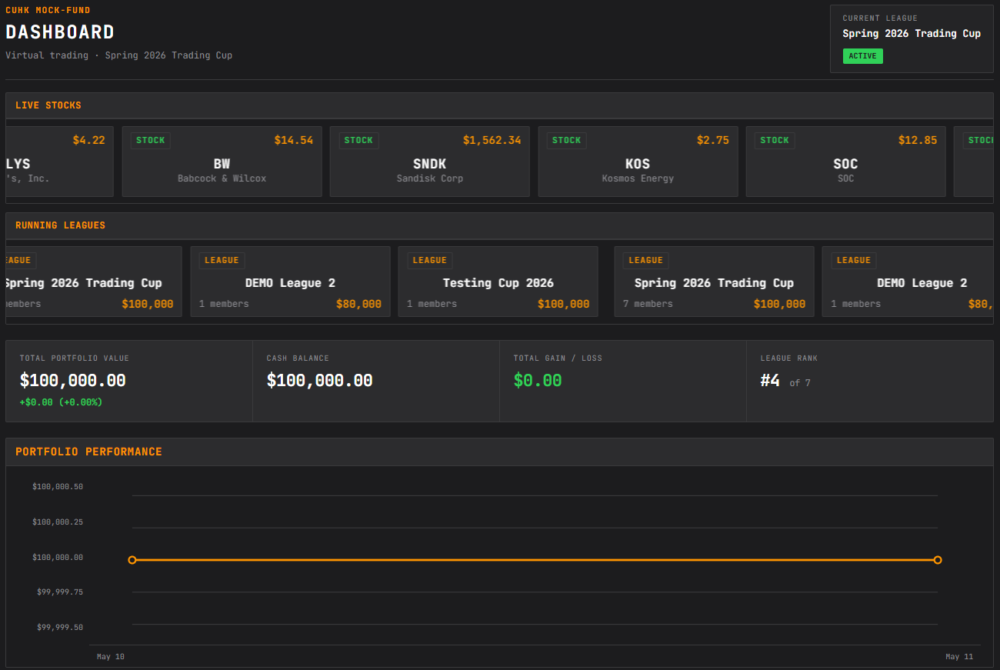

|
Year 4 Computer Science student at CUHK, building reliable full-stack applications and AI-powered tools for real people.
I'm a final-year Computer Science student at CUHK. Over the past two summers I've interned at Universal Innotech as a software engineer, shipping backend services and n8n automations, and at the Civil Aviation Department, where I built VBA reporting tools and a retrieval-augmented ICAO assistant.
I like turning messy requirements into dependable products: TypeScript monorepos and PostgreSQL schemas, data pipelines, and interfaces that stay out of the way. My final-year project, Magpie, makes short-form social content searchable by meaning with Gemini embeddings and pgvector.
When I'm not coding, you'll find me on the basketball court or exploring the latest tech innovations.
Bachelor of Science in Computer Science
Secondary Education
Universal Innotech Group Company Limited
Civil Aviation Department - Air Traffic Management
Shaw College, CUHK
HK Express - Participant

AI content retrieval app that makes short-form social content searchable by meaning.
Final-year project: a pnpm monorepo with an Expo client and Hono API sharing Zod schemas, backed by a 12-table Supabase schema with row-level security.

Shared trip ledger with multi-currency balances, itinerary and wishlist.
A mobile-first travel journal: split bills across currencies, settle balances with a min-transactions algorithm, and share itineraries and wishlists in real time.

Personal concert diary to track past and upcoming live music experiences.
A personal concert tracking app to save concerts you've attended and plan future ones, with cloud sync and beautiful UI.

Real-time cultural events platform with Google Maps integration.
A website showcasing real-time cultural events in Hong Kong with Google Maps integration and interactive UI.

Mock-trading league platform with OAuth login, portfolios, and leaderboards.
Built a mock-trading web platform with secure OAuth authentication, league and portfolio management, and leaderboards.